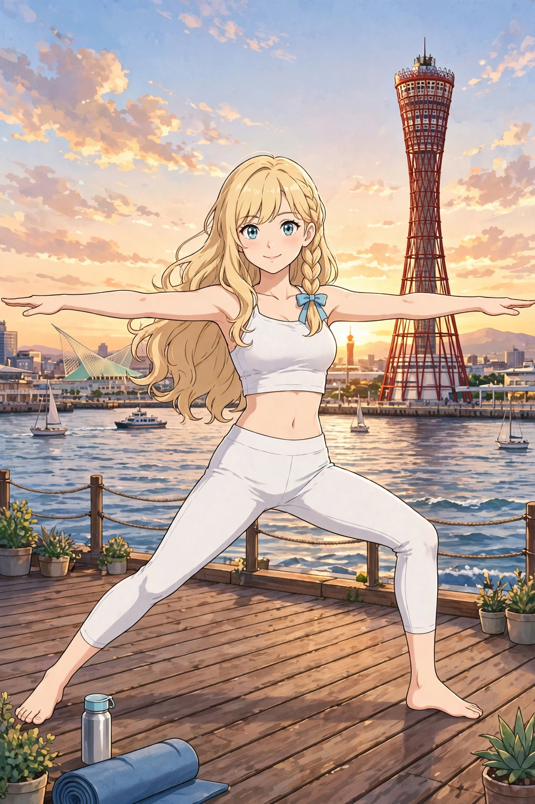

ホットヨガスタジオ LAVA 三ノ宮駅前店
ホットヨガ三ノ宮男女共用
男女共用のホットヨガ専門店です。60分のレッスンが中心で、初心者向けから部位・目的別のクラスまで種類が多く用意されています。定休日は毎週火曜です。…

神戸でヨガスタジオを探すとき、まず決めたいのは「どの駅で通うか」です。このポータルで掲載中の兵庫県のスタジオは8店で、すべて神戸市中央区の三ノ宮・元町エリアに集まっています。駅から徒歩1〜9分の範囲にホットヨガの大手から少人数制の専門スタジオまでそろっているのが神戸の特徴です。この記事では、掲載データをもとにエリアごとの傾向と、目的に合った選び方を整理しました。
神戸の掲載店8店はすべて三ノ宮・元町エリアにあります。JR「三ノ宮駅」東口から徒歩1分のLAVA三ノ宮駅前店、JR「元町駅」から徒歩1分のホットヨガスタジオ オー三宮店、JR「三ノ宮駅」東口から徒歩約3分のgoriyogaなど、駅からの近さがそろっています。元町駅から徒歩2〜4分の範囲にもロイブ神戸三宮店、アシュタンガヨガ神戸、studio SUNDARIがあり、仕事帰りや買い物のついでに寄りやすい立地です。まずは通いやすい駅を決めると、候補が絞りやすくなります。
ホットヨガ専門は3店です。LAVA三ノ宮駅前店は男女共用で、60分のレッスンが中心。初心者向けから部位・目的別のクラスまで種類が多く、定休日は毎週火曜です。ロイブ神戸三宮店とオー三宮店は女性専用で、ロイブはホットヨガのほか幅広いプログラムがあり定休日は毎週月曜、オーは平日10:00〜22:00・土日祝10:00〜19:00の営業で定休日は木曜です。女性専用の落ち着いた環境で受けたい人はこの2店が候補になります。
常温ヨガは5店です。goriyogaは10人以下の少人数制で、エアリアルヨガやホイールヨガ、ピラティス、マタニティ／産後など20種以上のレッスンがあります。studio SUNDARIはハタ、ヴィンヤサ、陰ヨガ、骨盤調整、アシュタンガ（マイソール形式）など多様なクラスにマットピラティスも加わります。ARU yoga kobeは少人数制・都度払い制で入会金0円・マットレンタル無料と案内されています。アシュタンガヨガ神戸（AYKB）はSharath Yoga Centre公認の専門シャラで、早朝マイソールや週末のレッドクラスがありオンライン併用もできます。ヨーガスクエア ディーバはヨーガ療法をベースに、ポーズ・呼吸法・瞑想を組み合わせ、椅子ヨガ対応クラスやプライベートレッスン、オンラインレッスンもあります。
神戸の掲載店では、ホットヨガはLAVA三ノ宮駅前・ロイブ神戸三宮・オー三宮の3店。温かいスタジオでたっぷり汗をかく感覚が好きな人に向いています。常温はgoriyoga・studio SUNDARI・ARU yoga kobe・アシュタンガヨガ神戸・ディーバの5店で、少人数制や専門性の高い店が多く、自分のペースでポーズを確認しながら進めたい人に合っています。迷ったら、まず体験レッスンで室温の感じを確かめるのがおすすめです。
掲載店の体験は、LAVA三ノ宮駅前店とロイブ神戸三宮店とオー三宮店が0円（手ぶら可・キャンペーンの条件あり）、ARU yoga kobeが1,000円、goriyogaが1,650円、アシュタンガヨガ神戸が体験チケット2回2,200円（対面体験は兵庫・大阪在住者限定）、ディーバがスタジオ体験3,300円・オンライン体験2,200円など、始めやすい価格がそろっています（いずれも公式記載の要約で、条件は公式サイトで確認してください）。服装や持ち物は体験の案内に従えばよく、最初から道具をそろえる必要はありません。
男女共用のホットヨガ専門店です。60分のレッスンが中心で、初心者向けから部位・目的別のクラスまで種類が多く用意されています。定休日は毎週火曜です。…
女性専用のホットヨガスタジオです。ホットヨガを中心に幅広いプログラムがあり、50〜60分のレッスンに初回体験OKの表示があります。定休日は毎週月曜です。…
女性専用のホットヨガスタジオです。平日は10:00〜22:00、土日祝は10:00〜19:00の営業で、定休日は木曜です。…
10人以下の少人数制スタジオです。エアリアルヨガ、ホイールヨガ、ピラティス、マタニティ／産後など20種以上のレッスンがあります。定休日は日曜です。…
少人数制・都度払い制のスタジオです。入会金0円・入会手続きなしで、マットレンタルは無料と案内されています。基本のヨガやシヴァナンダヨガなどのクラスがあります。…
Sharath Yoga Centre公認のアシュタンガヨガ専門シャラです。早朝マイソールや週末のレッドクラス、平日午後のクラスがあり、全クラスオンライン併用もできます。…